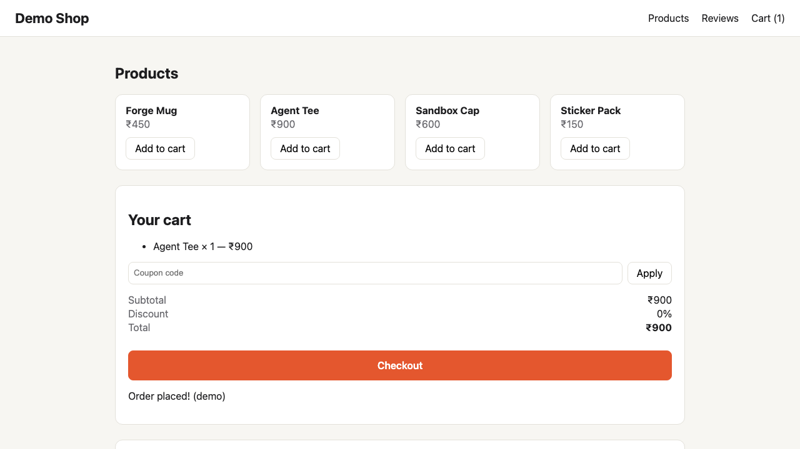

1It proves the bug first
It writes a browser check of what the customer expects, and runs it in an isolated Browser Lab
run_repro · the check the agent wrote
await page.locator('[data-add="tee"]').click(); // add the Agent Teeawait page.locator('#cart').scrollIntoViewIfNeeded();await expect(page.locator('#total')).toHaveText('₹900');await expect(page.locator('#checkout')).toBeVisible(); // must be visible
✓ Laptop · checkout visible · passes

✗ Phone · checkout missing · fails

▲ Checkout button is missing
REPRODUCED